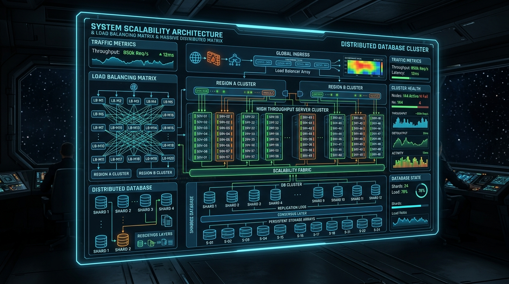

Introduction to High-Scale System Design
Designing software systems that scale to millions of concurrent users requires understanding distributed systems trade-offs—balancing throughput, latency, consistency, and fault tolerance. This masterclass covers the key building blocks used in FAANG-level system design interviews.
1. Load Balancing Strategies
Load balancers distribute incoming traffic across application servers. Common algorithms include Round Robin, Least Connections, and Consistent Hashing:
# Consistent Hashing Node Resolver Pseudocode
import hashlib
class ConsistentHashRing:
def __init__(self, nodes=None, replicas=3):
self.replicas = replicas
self.ring = {}
self.sorted_keys = []
if nodes:
for node in nodes:
self.add_node(node)
def _hash(self, key: str) -> int:
return int(hashlib.md5(key.encode('utf-8')).hexdigest(), 16)
def add_node(self, node: str):
for i in range(self.replicas):
key = self._hash(f"{node}:{i}")
self.ring[key] = node
self.sorted_keys.append(key)
self.sorted_keys.sort()
def get_node(self, key: str) -> str:
if not self.ring:
return None
h = self._hash(key)
for k in self.sorted_keys:
if h <= k:
return self.ring[k]
return self.ring[self.sorted_keys[0]]
2. Database Sharding & Read-Replicas
When single relational databases hit CPU and IOPS write limits, horizontal sharding distributes records across isolated database partitions:
| Technique | Mechanism | Best Used For |
|---|---|---|
| Read-Replicas | Primary Write DB -> Multiple Secondary Read DBs | Read-heavy workloads (90% read / 10% write) |
| Horizontal Sharding | Hash-based Partitioning (`user_id % num_shards`) | High write volume datasets |
| Caching (Redis) | In-memory Key-Value Cache (LRU Eviction) | Ultra-low latency data retrieval (<2ms) |
3. The CAP Theorem Trade-Off
In distributed storage, you can only pick two: **Consistency**, **Availability**, or **Partition Tolerance**.